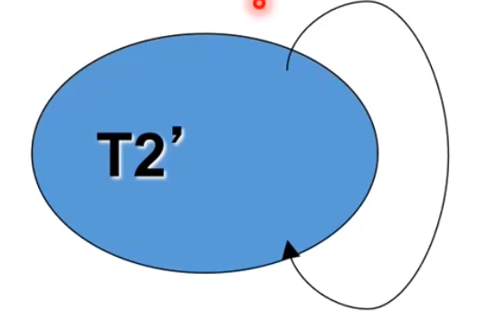

L'idea di base è quella di voler rendere il mio database più dinamico possibile. Se voglio applicare nuove regole al database, quello che devo fare è modificare la logica di business per ogni applicativo che accede al mio database. Si vuole creare un set di regole in modo da modificare la logica di business lato database. Una base di dati attiva è una base di dati che contiene regole attive che chiamiamo trigger. il trigger è uno strumento che si basa sul paradigma:
Evento-Condizione-Azione
Questo modello prende il nome di modello reattivo. L'unico problema dei trigger è la complessità di progettazione.
Ogni trigger necessità per essere definito di alcune informazioni standard:
after,before)
insert,update,delete)
after e before)
La sintassi è la seguente:
create trigger TriggerName //definisco nome del trigger
{before | after} //specifico che modalità usare
{insert | delete | update [of column]} //specifico l'evento, con update posso decidere di agire sulla singola colonna
on Table //specifico evento e su quale Tabella
[referencing //Da qua
{ [old_table [as] OldTableAlias]
[new_table [as] NetwTableAlias]
} |
{ [old [row] [as] OldTupleName]
[new [row] [as] NewTupleName]
}] //A qua avviene la gestione delle Tabelle di transizioneSono le tabelle prima e dopo dell'esecuzione SQL. Supponiamo di inserire un record in una tabella, allora oldtable sarà la tabella prima dell'inserimento del record, mentre newtable sarà la tabella dopo l'inserimento
[for each {row | statement}] //Con for each row azioniamo il trigger per ogni riga modificata, con for each statement
//azioniamo il trigger solo una volta per blocco di righe
//modificate. Se vengono modificati 10 record, con la prima modalità
//il trigger verrà azionato 10 volte, con la seconda verrà invece azionato una sola volta
[when condition]
SqlStatements //I comandi SQL che il triggere deve eseguire
con before dico che vado ad eseguire il trigger prima dell'evento. Invece con after prima viene eseguito l'evento e dopo il trigger. Di conseguenza con la prima modalità
il trigger non modifica direttamente il db, cosa che avviene con la seconda modalità.
Immaginiamo di voler aggiornare lo stupendio di un dipendente eseguendo UPDATE Impiegato SET Salario = 200 WHERE Impiegato.id = '123456' . Si vuole
creare un trigger in modo tale che ogni volta che aggiorniamo il valore dello stipendio, questo può essere aumentato massimo del 20%. Quindi immaginando lo stipendio iniziale del dipendente 123456 a 100, non è
possibile eseguire la query prima indicata come previsto perchè 200 corrisponde al 50% di più dello stipendio iniziale. Il trigger imposterà il nuovo stipendio a 120. Vogliamo vedere come creare un trigger del genere
con i due differenti approcci:
create trigger LimitaAumenti
before update of Salario on Impiegato
for each row
when (New.Salario > Old.Salario * 1.2)
set New.Salario = Old.Salario * 1.2
In questo caso vediamo quello che fa il trigger:
UPDATE Impiegato SET Salario = 200 WHERE Impiegato.id = '123456'
In ogni caso il trigger viene eseguito prima che venga registrato un vero e proprio update della tabella Impiegato.
create trigger LimitaAumenti
after update of Salario on Impiegato
for each row
when (New.Salario > Old.Salario * 1.2)
Update Impiegato
set Impiegato.Salario = Old.Salario * 1.2
WHERE Impiegato.Matricola = Old.Matricola
Si comporta come prima con l'unica differenza che il trigger viene eseguito dopo l'operazione di update iniziale. Visto che viene eseguito dopo la prima operazione, con after, quello che dobbiamo specificare è una vera e propria operazione di UPDATE. da notare la parte in verde
for each statement andiamo a modificare insieme un gruppo di tuple.
for each row andiamo a modificare uno alla volta un gruppo di tuple.
Scegliere la granularità è importante anche nella definizione del trigger, infatti se:
Old.Column e New.Column
Old.Table e New.Table perchè andiamo ad agire su di un insieme di tuple insieme.
Ovviamente:
Esempio trigger statement level
create trigger FileDeletedInvoices after delete on Invoice
referencing old_table as OldInvoiceset //diamo OldInvoiceset come alias per old_table
insert into DeletedInvoices
(select *
from OldInvoiceset)
Quello che fa il trigger è simulare il comportamento di un cestino che conterrà tutti i record eliminati da Invoice
SQL ci da la possibilità di associare più di un trigger ad una stessa tabella, a meno di algoritmi di riduzione conflitti, è molta la probabilità che più trigger vadano in conflitto, in questi casi il DBMS esegue:
Quando gli stessi trigger fanno parte della stessa famiglia, allora vengono eseguiti prima quelli che sono stati creati prima cioè quelli che hanno il timestamp di creazione più vecchio
Quando i trigger vengono eseguiti gli viene associato un TEC (trigger execution context). Un trigger può richiamare altri trigger, in questi casi il TEC iniziale, che definiamo includente, verrà salvato e si passa al TEC successivo che sarà quindi incluso nel primo. Ogni volta che un trigger termina la propria esecuzione, viene eliminato il TEC contenuto e ripristinato quello contenente, e così via ricorsivamente. L'esecuzione termina correttamente quando si arriva ad uno stato quiescente cioè non ho più TEC associati a trigger che devo eseguire. L'esecuzione termina con errore quando si raggiunge una profondità di ricorsione eccessiva dando luogo ad un eccezione di non terminazione. Se si verifica un errore durante l'esecuzione di un trigger contenuto viene fatto invece un rollback allo stato contenente più vicino.
Ogni trigger deve avere come importante proprietà quella di terminazione , cioè ogni trigger iniziato deve finire(con errore o no). Per lo studio della terminazione, viene usato il grafo di triggering, che ha:
Quello che possiamo dedurre inoltre è:
Esempio di non terminazione
T2': create trigger CheckBudgetThreshold
after update on Employee for each row
when New. Salary ‹ 50000
update Employee
set Salary = 0.9*Salary
In questo caso il nostro grafo sarà del tipo:
Quello che fa il trigger è diminuire del 90% ogni volta il salario se minore di 5000, ovviamente creiamo una condizione di non terminazione. Dopo un certo numero di ricorsioni avremo quindi un errore.
Esempio ciclico con terminazione
T1:
create trigger AdjustContributions after update of Salary on Employee referencing new table as NewEmp update Employee
set Contribution = Salary * 0.8
where RegNum in ( select RegNum from NewEmp)
T2: create trigger CheckBudgetThreshold after update on Employee
referencing new_table as NewEmp1
when 50000 < ALL (select (Salary+Contribution) from NewEmp1)
update Employee
set Salary = 0.9*Salary
In questo caso il nostro grafo sarà del tipo:
Pur il grafo presenta dei cicli abbiamo che i trigger terminano. In altre parole, la presenza di cicli nel grafo non è sufficiente per determinare che l'esecuzione continuerà all'infinito; ci sono delle condizioni o degli eventi che fanno sì che l'esecuzione si interrompa o termini.
Il controllo di terminazione è per cui importante per evitare errori grossolani durante la scrittura di trigger.